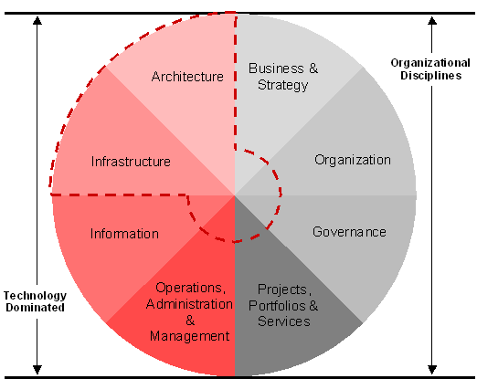
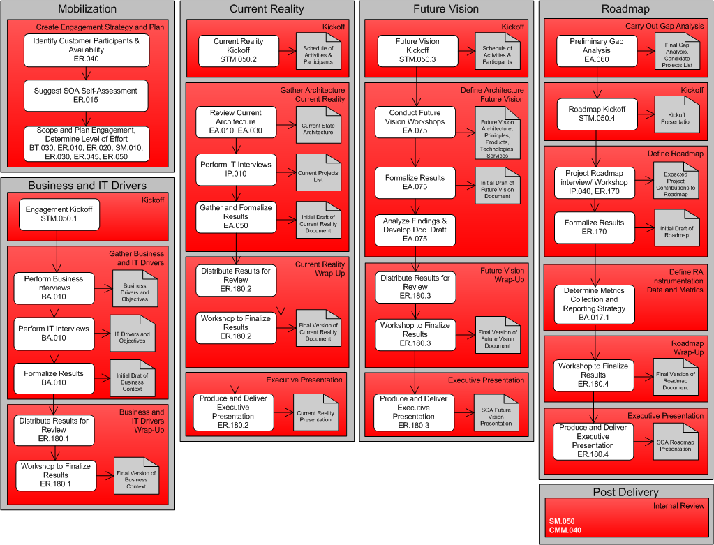

OUM |
SOA Reference Architecture Planning Supplemental Guide |
||
Method Navigation |
Current Page Navigation |
||
|
|
||||||||
The SOA Reference Architecture Planning View and Supplemental Guide are used to help organizations develop an architectural vision for SOA, as well as a plan, referred to as a roadmap, to execute against that vision. The vision defines a set of principles and architecture to create consistency across the enterprise. The roadmap defines a set of incremental steps to progress an organization from their current state of SOA infrastructure to their architectural vision. As with all SOA planning views, this view is used to plan one particular aspect of the SOA strategy and can be combined with other SOA planning views based on the organization’s needs.
As organizations begin to embrace SOA for the value and benefits it offers, they realize the need to create consistency across the enterprise in various areas of architecture and technology. They need to establish a common set of principles to drive the convergence to a desired vision. The SOA Reference Architecture Planning view presents an effective and pragmatic plan to achieve that vision.

Referring to the SOA Maturity Model above, the primary focus of the SOA Reference Architecture View is the Architecture Domain, however certain aspects of other domains are touched upon as they relate to reference architecture and infrastructure development plans. The view provides a reference architecture tailored to the objectives and architectural vision of the organization, and a roadmap for the establishment of SOA infrastructure based on current and future development projects. The reference architecture describes a future vision of SOA, roughly 2-3 years out, based on business and IT objectives, drivers, and principles. It provides guidance for future projects around architecture, technologies, products, and best practices to drive convergence on a common, unified vision of SOA. It documents the organization and governance and funding model perceived by the business to support the SOA vision. And it addresses the effects SOA will have on manageability, availability, scalability and security.
The roadmap defines a set of incremental steps to progress an organization from their current state of SOA infrastructure to their architectural vision. In collaboration with the organization, relevant information is captured about the business, the current state and vision of IT, and key in-flight and future projects, and with that as a basis develop the SOA reference architecture and infrastructure roadmap.
This view does not attempt to satisfy all aspects of the organization and governance, projects and applications, and building blocks domains. To clarify the coverage this service provides, the following limitations are mentioned:
As companies transition from siloed organizations, applications, and data to the fluid form of IT environment that SOA offers, it is important to consider the foundation that this transition will be built upon. A fluid IT environment requires shared infrastructure and well established common standards. For example, in the not too distant past, new systems often had to include their own proprietary networks, client hardware, and security mechanisms. The lack of commonly accepted standards, coupled with the mindset of autonomous development teams helped foster the build-out of very siloed applications. Over time, as standards emerged around network, security, and communications protocols, a common infrastructure began to emerge. New systems no longer had to include these elements. Instead, they adopted the new universally accepted standards and technologies that allowed them to leverage common infrastructure. This helped to improve the state of application integration and reduce the cost of new applications at the same time.
Since then, even more aspects of computing have re-emerged as shared infrastructure. For example, disk subsystems and tape backup silos are now quite common. These shared assets have replaced proprietary peripherals by offering standards-based access at greatly reduced cost. In each case the justification was the same – why continue to promote costly proprietary solutions when shared infrastructure and open standards save time and money?
SOA offers a continuation of this trend. The next generation infrastructure can include even more value in the form of shared services as well as the capabilities to discover, version control, monitor, and access those services. This next generation infrastructure is an important concept for organizations to consider as part of their future vision. In doing so, they should be aware of infrastructure components that are needed and the benefit of products built specifically for this vision. Products that are no longer tied to expensive, proprietary technologies, but instead offer universal access via open standards at a reduced cost of ownership.
This view can be used to help define an organization's next generation IT infrastructure. Through the creation of SOA reference architecture, this infrastructure is defined, given purpose, and established on a roadmap.
This view can best be used when in a situation where the organization has a need to develop an architectural vision for SOA, and a plan to execute against that vision. The organization has a need to create consistency across the enterprise in various areas of architecture and technology, and to establish a common set of principles to drive convergence on a desired vision, as well as a pragmatic plan to achieve that vision.
However, not all situations are ideal. Some organizations may be just considering SOA, while others may only be approaching SOA at a departmental level. The most suitable organization is:
The organization may have already taken steps to create a SOA, or may be just beginning to articulate a vision. Either way, the current level of SOA maturity is not important, but is useful to know during scoping.
The use of this SOA Reference Architecture Planning View provides the following value and work products:
The following is a high-level workflow for the SOA Reference Architecture Planning View:

There are six areas in the SOA Reference Architecture Planning view, each with its own set of tasks.
MOBILIZATION – During Mobilization the foundation for the engagement is made. This includes scoping of the engagement, determining of the level of effort, and identifying enterprise participants and scheduling constraints. It also includes the identification and discovery of relevant existing enterprise documentation, the identification and assignment of the required enterprise resources, including the level of effort required and schedule for these enterprise resources.
Customization of this view or combining elements of this view with other SOA views should be done at this point of time. In fact, if multiple views are combined, then the Mobilization Phases of each view are effectively combined in order to fully scope, schedule, and staff the engagement. Additional guidance on Mobilization can be found in the SOA Reference Architecture Planning Task Guidelines.
BUSINESS AND IT DRIVERS – This is actually the first area of the actual engagement execution. During Business and IT Drivers, the business and IT drivers are collected that affect future vision reference architecture decisions. You should also collect the benefits and challenges that management perceives to be associated with SOA. The results are factored into reference architecture workshops and listed in the reference architecture document. Additional guidance on Business and IT Drivers can be found in the SOA Reference Architecture Planning Task Guidelines.
CURRENT REALITY – In order to provide a starting point for the SOA Infrastructure Roadmap, an understanding of the current state of IT must be obtained. An assortment of workshops, interviews, and questionnaires may be used to collect information on the current enterprise architecture, infrastructure, technologies, and products, as well as IT organizational structures, governance, and project funding models. The Current Reality area involves both business and technical resources, but with an extra emphasis on staff with Technical Infrastructure knowledge, as most information gathered pertains to areas of technology. A Current Reality Definition document and executive presentation are produced, and the current reality is used as a starting point for the infrastructure roadmap. Additional guidance on Current Reality can be found in the SOA Reference Architecture Planning Task Guidelines.
FUTURE VISION – The purpose of Future Vision is to help the organization define a future vision SOA reference architecture, roughly 2-3 years out. Using a series of workshops, you will guide the enterprise representatives through various aspects of SOA, infrastructure, and technology. The result is an SOA reference architecture that is tailored to the organization’s business and IT drivers, vocabulary, technology preferences, and architectural standards. The Future Vision area mostly involves Technical Infrastructure and Engagement Lead resources. The SOA Reference Architecture document and executive presentation are produced during this area. The future vision also factors into the infrastructure roadmap. Additional guidance on Future Vision can be found in the SOA Reference Architecture Planning Task Guidelines.
ROADMAP – The Roadmap area of this view provides the organization with an infrastructure roadmap. Its purpose is to plan an incremental transition from the current state of infrastructure to the future vision. The team uses information from the Current State and Future Vision phases to produce a preliminary gap analysis. They you work with the organization to finalize the gap analysis, plan roadmap increments, and identify 1-3 projects that may contribute to the infrastructure transition. Projects are then interviewed to further qualify their infrastructure plans and finalize the roadmap. This area mostly involves the Technical Infrastructure and Engagement Lead resources. The result is an Infrastructure Roadmap document and a final executive presentation. Additional guidance on Roadmap can be found in the SOA Reference Architecture Planning Task Guidelines.
Review the supplemental task guidance for ER.030, Set and Agree Plan for Envision Engagement for more details about how this type of engagement may be planned.
POST DELIVERY - Following the successful completion of an engagement, a few post-delivery activities should take place, i.e., acceptance sign-off and documenting lessons learned. Additional guidance on Post Delivery can be found in the SOA Reference Architecture Planning Task Guidelines.
Refer to the SOA in OUM page for access as well as descriptions for all the SOA views in OUM.
The SOA Reference Architecture Planning process has been mapped to the Envision focus area of Oracle Unified Method to help show which tasks would typically be performed during each of the four areas from Mobilization to Roadmap.
See the mapping document and SOA Reference Architecture Planning view for applicable OUM tasks.

Copyright © 2006, 2016, Oracle and/or its affiliates. All rights reserved.